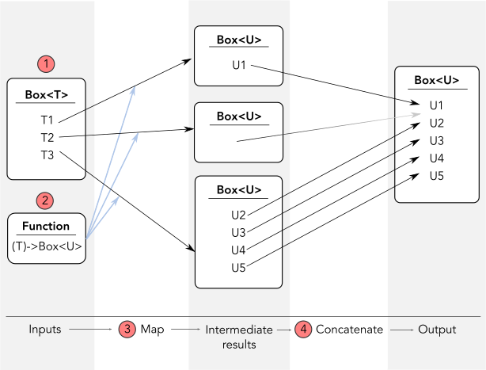

An aside about flatMap and monads
In the previous article, I used a Swift function named flatMap. There are three kinds of function named flatMap in the Swift standard library but I used the one that is the least monadic.
Discussing the monad-ish-ness of flatMap in Swift is a weird thing to do. Swift doesn’t use the word “monad” anywhere in its documentation so monads are far from fundamental to Swift.
Yet monads are essential in some programming languages. Reprising the previous article’s topic of “units of computation”, monads are a fundamental unit of computation in Haskell. Influence from Haskell may leave Swift programmers curious about monads wondering if they too should try to use them more often in their programs.
In this article, I’ll look at monads; what they are, why they’re fundamental in Haskell, whether flatMap is necessarily a monad and the importance in Swift of constructs that are monad-ish but not strictly monadic.
What is a monad?
A monad is a “container” type (like Array, Optional, etc) that is acted upon through a particular transformation called bind.
The bind transformation is not very complicated but it involves an intermediate step which can make it all seem a little abstract. Here’s a diagram to try and make it easier to picture:

A bind operation does the following (as shown by the red circles in the diagram):
- takes a container that can contain zero or more instances, e.g.
Box<T> - takes a function which transforms an instance of the contained type from (1) into a new container of the same kind as in (1) containing zero or more new instances of a potentially new type, e.g.
(T)-> Box<U> - applies the function from (2) to each of the contained instances from (1)
- concatenates all containers produced by (3) into a single container, e.g.
(Box<Box<U>>) -> Box<U>
A fully conforming monad places a few additional requirements on the container type and the concatenate step but these requirements are not really relevant to understanding monads so I’ll skip them.
Instead, let’s take a quick step back and discuss the scenario in which we might need such a specific transformation.
A scenario where we might use a monad
Imagine we have lots of functions that take plain, unwrapped inputs like Int or String and these functions happen to return results wrapped in containers like Optional<Double> or Array<Character>.
Since our functions happen to return results in containers, we end up with a lot of containers.
It’s usually not a problem to go from unwrapped values to one layer of containment – a container may help us hold multiple values or remind us that an operation may have failed – but if we happened to apply a container-returning function once, we might want to applying another similar function again in the future. Suddenly Optional<Double> becomes Optional<Optional<Float>> or Array<Character> becomes Array<Array<UnicodeScalar>> and now things start to get unwieldy.
If we care about the end-results, not the structure in-between, then the bind transformation of a monad helps us repeatedly apply container-returning functions without needing increasingly deeper layers of wrapping around our results.
Why do Haskell programmers care so much?
If you didn’t realize from the explanation and the scenario: monads are fairly specific.
A bind transformation can be useful in an imperative language but even in a situation ideally suited to monads, you might instinctively process things another way. You may just perform your own for loop over the data and perform the concatenation yourself as you go. Or you could apply a post-processing reduce step after the map that does its own container unwrapping and concatenation.
Why are monads so fundamental in Haskell?
The answer is that it’s not general monads that are useful in Haskell as much as one-way monads – the IO monad in particular – and how they interact with the Haskell runtime system.
In a strict functional programming language like Haskell, functions are not allowed to mutate state or have side effects. This complicates any interaction with the user, the file system, networking, the operating system or other services since all of these interactions are stateful and have side effects.
The way Haskell deals with these problems is that you can interact with these services freely but you never get access to the result. Instead, you get a container (an IO monad) that you can never unwrap. If you never unwrap a container containing side effects, then you remain free from the impact of those side effects – your actions remain the same regardless of whether the container holds a fully parsed data structure or a file-not-found error.
How can you handle a container that you can never unwrap? With transformations like map, of course. A map transformation in Haskell is effectively your code telling the runtime system: please look inside the container for me and should the container contain a value, then apply this function.
And since many of the functions you might apply in Haskell will themselves return IO monads, the bind transformation becomes useful so we can concatenate successful steps through our own program.
Monads as the fundamental “unit of computation” in Haskell
In short video on Microsoft’s Channel 9 titled Towards a Programming Language Nirvana (from 2007), Simon Peyton Jones, Erik Meijer and Butler Lampson talk about how programming is fundamentally about doing work, creating output and having effects but – as the video explains – pure functional programming languages like Haskell are about not having effects, rendering them useless.
Peyton Jones is being facetious, of course, Haskell does have some effects which Peyton Jones calls “controlled” effects. Haskell acheives these controlled effects by using the one-way nature of the IO monad to keep code and effects separated.
Since the IO monad is the means by which Haskell controls effects, the IO monad is literally how you program in Haskell. Each IO monadic bind can be considered a single effect and the only way to build a series of effects (i.e. a program) is to have multiple IO monadic bind steps. In this way, the IO monad is literally the building block used to build Haskell programs. Haskell even offers special do syntax for creating a function that is aesthetically a series of monadic bind steps so the aethetics of the program can match the procedural structure.
Swift and flatMap
Let’s bring the discussion back to Swift.
I’ve explained that a bind transformation is like a map where the function it applies returns a container type and the monad transformation unwraps all the returned containers and concatenates them together.
This is close to the same description as some of the flatMap functions in Swift:
Returns an array containing the concatenated results of calling the given transformation with each element of this sequence.
extension Sequence {
func flatMap<S: Sequence>(_ f: (T) throws -> S) rethrows -> [S.Element]
}So are the types in Swift that implement flatMap monads?
Not quite a monad
A true monad transformation requires that all the container types involved be the same kind - a restriction which is not enforced, here. This flatMap function operates on any Sequence, produces a second Sequence kind that isn’t necessarily the same as the first and returns the concatenation as an Array. This function is only a monad if both the Sequence arguments are Array. All other usage of this function results in not-a-monad.
Does this matter?
Pragmatically speaking, the definition of this function makes it a lot easier to use a container type with this function, since the container type doesn’t need to offer its own construction and concatenation operators (Array is used instead).
On the negative side, there is the problem that you’d need a new overload of flatMap if you wanted to return Set or some other Sequence or Collection. This problem is mitigated by the fact that in these cases you can simply use the .lazy.flatMap variant instead and concatenate the sequence to a Set yourself.
But it’s still not technically a monad.
Exactly a monad
Swift does have a true one monad: Optional and its implementation of flatMap:
extension Optional {
func flatMap<U>(_ transform: (Wrapped) throws -> U?) rethrows -> U?
}All containers are Optional. Neat and tidy.
Of course, we don’t always use this flatMap. If we can, it’s better to use optional chaining:
let x = first().flatMap { $0.second() }.flatMap { $0.third() }
let y = first()?.second()?.third()Optional chaining is more syntactically efficient than flatMap but it requires instance methods chained via dots. If you want to pass the previous result into a function as a parameter, you might need to use flatMap.
Barely a monad at all
And then there’s this version:
extension Sequence {
// Returns an array containing the non-nil results of calling the given
// transformation with each element of this sequence.
func flatMap<S>(_ f: (T) throws -> S?) rethrows -> [S]
}This is the flatMap I used in the previous article. Instead of flatMap over Sequence to Sequence returning Array, this version is Sequence to Optional returning Array.
I’ve had debates with people about whether this flatMap should be renamed because it’s not monad-ish (monad-esque? monad-y?) enough to earn the name flatMap. The Swift Evolution mailing list has seen similar petitions to rename this function based on its monadic violations.
I’m amused by this debate since an Optional is effectively (if not semantically) a collection of one or zero instances, so this function is qualitatively equivalent to the flatMap over Sequence to Sequence returning Array version. Technically it is not possible for any usage of this function to be a monad but pragmatically, it serves exactly the same purpose as the previous Sequence implemention.
Yes, I realize that Haskell has mapMaybe and Scala (the origin of the name flatMap) requires chained map and filter in this case – but my feeling is that flattening a sequence of optionals is still a flatten so the name still works.
Change names for a different reason
For the CwlSignal example in the previous article, I used a Signal transformation named filterMap. This transformation is equivalent to a map that then omits Optional results – so I’ve renamed this debated flatMap in my own library.
The name change had nothing to do with avoiding monadic confusion and everything to do with avoiding mismatched functions getting accidentally promoted to returning an Optional result and satisfying the wrong overload to flatMap instead of giving a compiler error.
You can get the same kind of problem with the Swift standard library version of flatMap:
let x = [1, 2, 3, 4].flatMap { $0 * 2 }This code compiles without problem but it’s clearly a mistake; either I intended to use a regular map call instead of flatMap or I should have performed logic in the closure that returned an Optional.
This isn’t really a flatMap problem as much as it’s a warning to be careful with overloads that differ only by an Optional or Optional returning parameter – it’s better to keep these overloads name-isolated to minimize bugs.
Monad-like structures in Swift
I’ve already shown that optional chaining in Swift is equivalent to a flatMap and therefore is a monadic operation:
let x = first().flatMap { $0.second() }.flatMap { $0.third() }
let y = first()?.second()?.third()but it’s not the only construct that’s a little monadic.
Swift’s error handling is also monad-like, from a certain perspective. Consider the following code:
func someFunction(urlString: URL) throws -> Data {
let url = try makeUrlOrThrow(fromString: urlString)
let file = try openFileOrThrow(url: url)
return try readContentsOrThrow(file: file)
}this Swift error-handling based code is essentially the same as the following flatMap structured code based around functions returning Optionals that are nil on failure:
func someFunction(urlString: URL) -> Data? {
let url = makeUrlOrNil(fromString: urlString)
let file = url.flatMap { openFileOrNil(url: $0) }
return file.flatMap { readContentsOrNil(fil: $0 }
}Of course, you can just unwrap an Optional. Using Swift’s syntax for handling optionals, it doesn’t look much different and does exactly the same work, even though it’s not a monad at all:
func someFunction(urlString: URL) -> Data? {
guard let url = makeUrlOrNil(fromString: urlString) else { return nil }
guard let file = openFileOrNil(url: url) else { return nil }
return readContentsOrNil(fil: file)
}Nearly a monad, exactly a monad, not a monad at all; the different is not always significant and you should feel free to choose the syntax and approach you prefer.
Conclusion
Even though monads are essential in languages like Haskell, they’re just one of many processing tools in Swift.
I don’t think there’s any real need to try to be monadic in Swift. There are plenty of cases where layers of Error handling or Optional or Array will naturally encourage you to concatenate results or filter out empty results but whether you choose to do this with flatMap or guard let or for loops is a matter of personal syntactic preference – you’ll get the same result in each case.
Are the types that implement flatMap in the Swift standard library monads? The Optional version always is. The Sequence version of flatMap is monadic when used with Array but otherwise is not. Monads have a requirement that the input, output and intermediate containers all be the same kind and Swift – without higher kinded types – couldn’t enforce this, even if it wanted.
For the purpose of flatMap, it appears that Optional is treated as a collection and is permitted to be mixed and matched like any other collection. This bothers some people but personally, I think it makes sense. I’ve always been more concerned by the naming problem caused by the fact that flatMap(x) needs to be read backwards. The function is really flatten(map(x)) – a map and then a flatten – which would be more correctly transcribed as mapFlatten. Like monoids, English isn’t commutative.
Statements, messages and reducers
CwlLayout: a Swift wrapper around Auto Layout